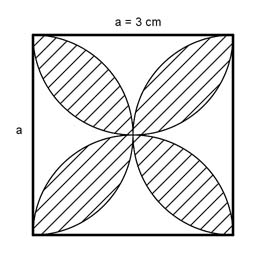

Aufgabe 126 Wie groß ist die schraffierte Fläche A?  Quadrat – 2 * Halbkreis = halbe weiße Fläche 1,5² cm * π 3 cm * 3 cm – 2 * --------------- 2 9 cm² - 7,1 cm² = 1,9 cm² = halbe weiße Fläche Quadrat – weiße Fläche = A A = 9 cm² - 2 * 1,9 cm² = 5,2 cm²